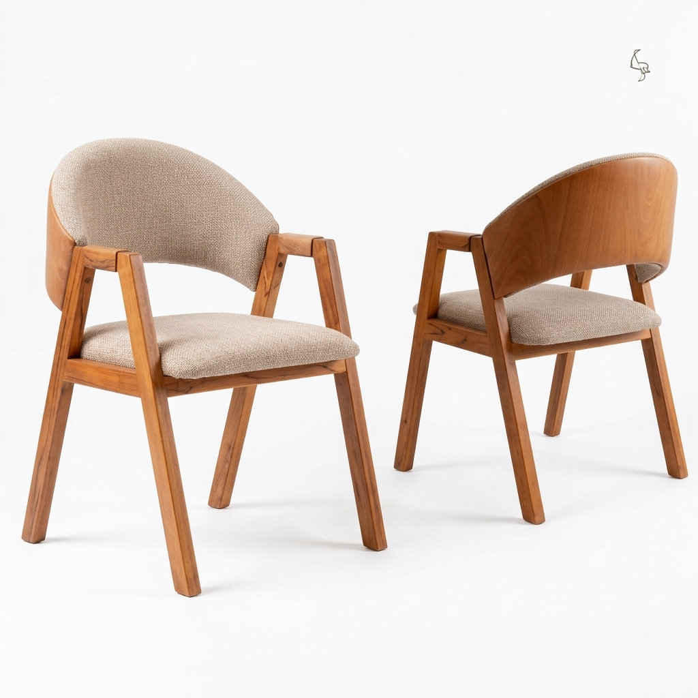
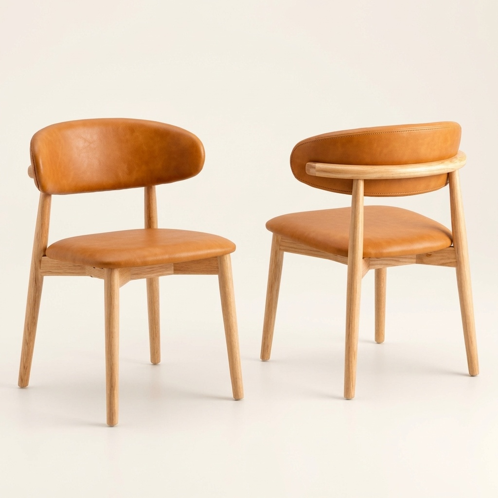
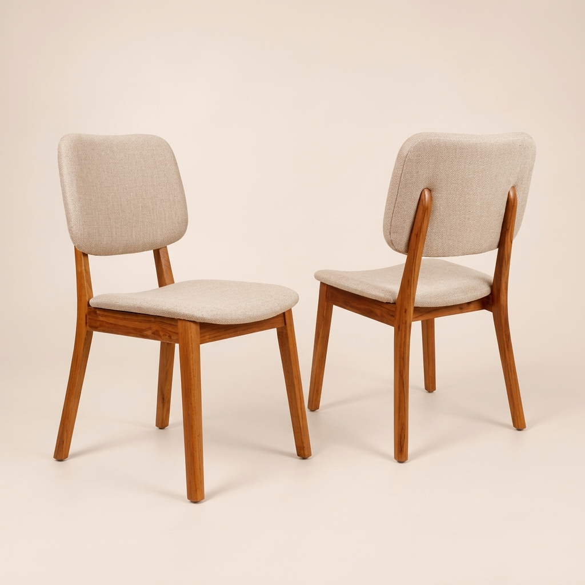

Cadeira encosto curvo
Braços em madeira e estofado em tecido para refeições longas e confortáveis.
 Gaspalar
Gaspalar
Peças em madeira com estofados em tecido e couro para deixar a sua mesa mais bonita e acolhedora.
Ver coleção
Modelos para diferentes estilos de ambiente.

Braços em madeira e estofado em tecido para refeições longas e confortáveis.

Linhas leves e visual neutro, combina com qualquer decoração.

Estofado em couro com gomos verticais e estrutura em madeira.
A Gaspalar trabalha com cadeiras e poltronas de madeira, combinando estruturas resistentes, estofados em tecido ou couro e um design pensado para o conforto no dia a dia.
Agende uma consulta, uma visita ou uma conversa com a nossa equipe.
Fale conosco